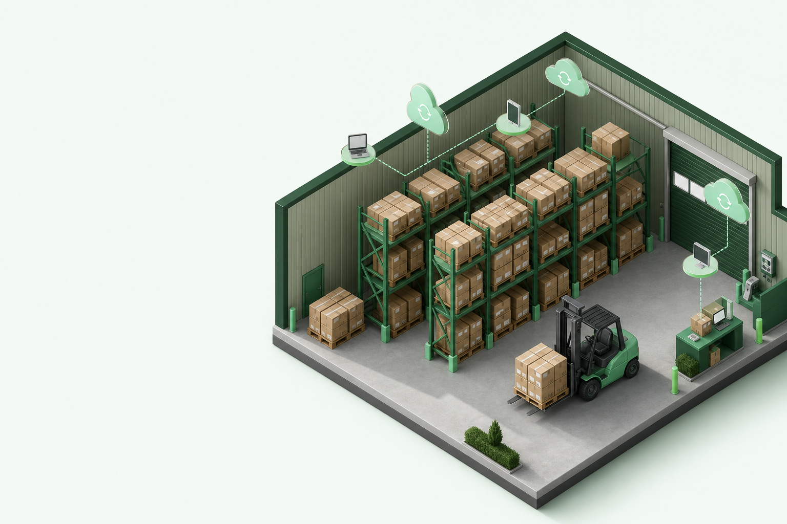
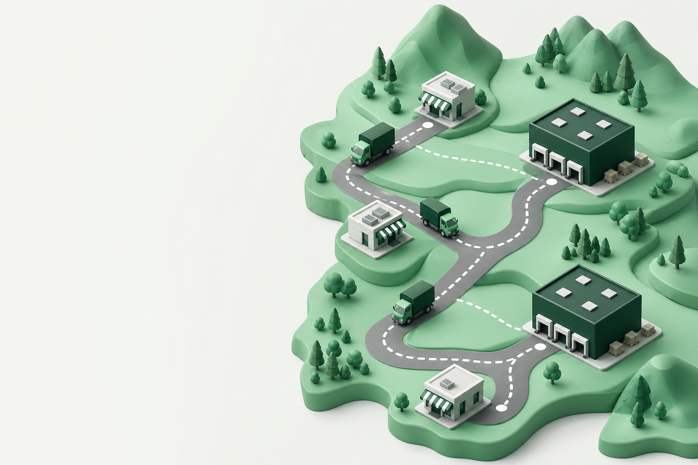
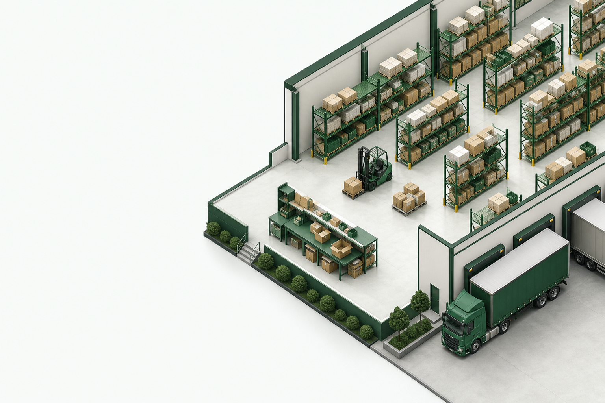
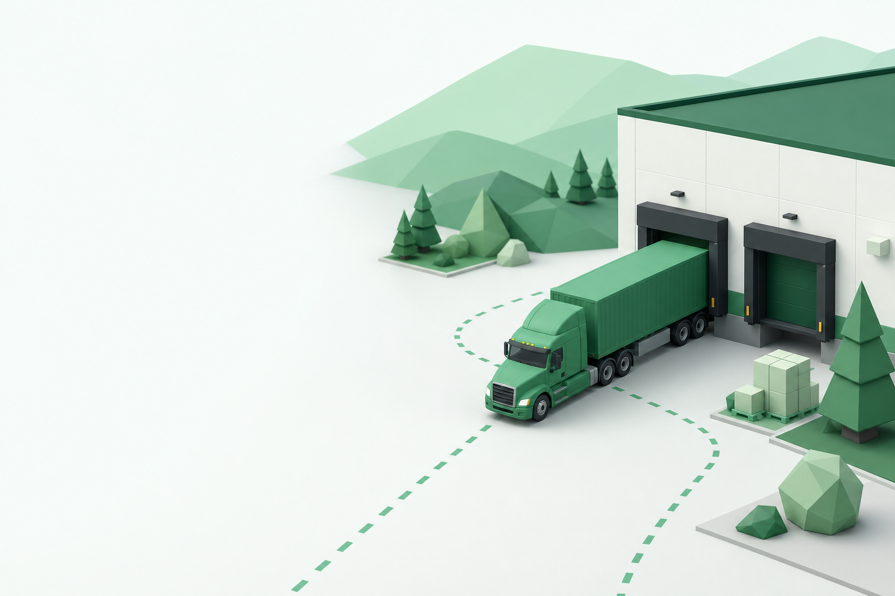
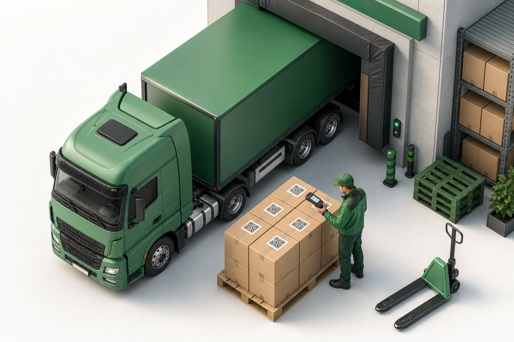
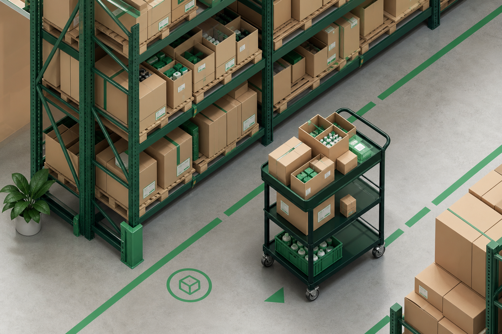
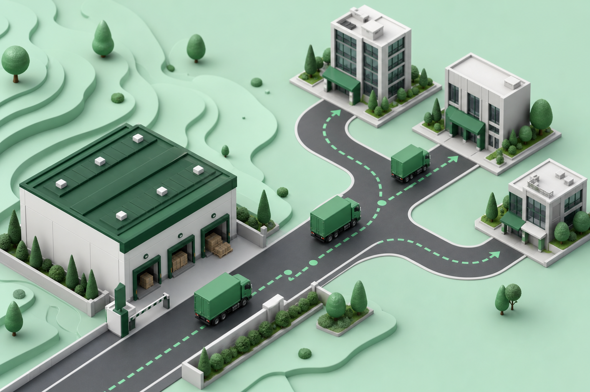

QR
Escaneo móvil en recepción, picking y conteo
WMS para distribuidoras · Biobío, Chile · Early access
Escaneo QR desde el celular, stock por ubicación, multi-sucursal y cola offline. Producto en desarrollo — regístrate para early access o piloto cerrado en el Biobío.
Flujo de referencia
De la recepción al cliente
SKU · 4829103X
Caja master distribuidor
Vista ilustrativa · producto en desarrollo
QR
Escaneo móvil en recepción, picking y conteo
Offline
Cola de movimientos en almacén sin señal
Multi
Sucursales con stock aislado por bodega
Por qué cambiar
No atacamos a Excel: lo reemplazamos donde deja huecos — ubicaciones, escaneo y kárdex. Elyce está en desarrollo; esto es lo que buscamos resolver en piloto.
| Capacidad | Excel / stock plano | Elyce WMS |
|---|---|---|
| Ubicaciones en bodega | — | ✓ Pasillo, POS, multi-sucursal |
| Escaneo en operación | — | ✓ QR y código de barras |
| Kárdex de movimientos | Manual o inexistente | ✓ Automático por evento |
| Offline en almacén | — | ✓ Cola y sync segura |
| Complemento Bsale / Defontana | Facturación y stock contable | Capa operativa — no reemplaza ERP |
Elyce no está en producción aún. Los beneficios operativos se validarán con pilotos reales en el Biobío.
Operación de punta a punta
Cinco momentos donde buscamos reemplazar planillas y suposiciones por trazabilidad — recepción, picking, conteo y kárdex en un solo flujo (objetivo del piloto).
Camión en muelle, escaneo desde el celular y sesión de recepción por carro. Cada ítem queda en kárdex antes de ubicarse en estante — sin pistolas industriales.
Lista de espera →Pedidos, tienda online y bodega física en un inventario por ubicación. El stock baja al preparar pedidos — menos sobreventas y menos cuadres manuales. Integraciones con marketplaces y ERP están en roadmap, no disponibles aún.
Capacidades →
Planifica entregas a comercios y repone puntos de venta con ubicaciones jerárquicas tipo PV-P01-MT03 y mapa de pasillos.

Picking por zona con FEFO, verificación por escaneo y trazabilidad por lote. Menos errores en pedidos mayoristas.
Early access →
Auditorías por zona con ajuste atómico de stock. Historial completo de movimientos por sucursal — recepción, reubicación, picking y merma.
Lista de espera →
Dónde aplica Elyce
PyMEs chilenas con bodega propia, más de 500 SKUs y necesidad de trazabilidad real — no solo stock plano en Excel.
Por qué existimos
Early access prioriza PyMEs con operación física real — no buscamos reemplazar tu facturador ni venderte hardware.
Conocemos PyMEs con bodega propia que cuadran en Excel, pierden horas en picking y no saben dónde está cada SKU — aunque el ERP diga que hay stock.
Elyce es la capa operativa que falta: escaneo desde el celular, ubicaciones, kárdex y multi-sucursal — accesible para PyME, sin pistolas ni WMS enterprise.
El producto está en desarrollo; abriremos pilotos cerrados en el Biobío para validar con operación real, no con promesas de software terminado.
Lo construimos porque vimos almacenes excelentes en ventas pero frágiles en piso — y creemos que la trazabilidad no debería ser solo para las grandes.
¿Tu operación es distinta? Cuéntanos en la lista de espera — priorizamos perfiles con dolor real en almacén.
¿Quieres ser de los primeros en probarlo?
Unirme a la lista de esperaCapacidades
WMS especializado para PyMEs — más operativo que un ERP contable, más accesible que soluciones enterprise. Construido en el Biobío para almacenes reales; algunas integraciones aún están en roadmap.
Desde la cámara del celular — recepción, picking, conteo y consulta rápida. Sin pistolas ni hardware dedicado.
Bodega → zona → posición con mapa POS y código PV-Pxx-MTyy.
Cola de movimientos en almacén. Sincroniza al recuperar señal sin duplicar transacciones.
Stock aislado por bodega, mínimos por sucursal y vista global para administradores.
Trazabilidad por lote y vencimiento en picking — primero lo que vence.
Auditorías por zona con ajuste atómico de stock. Historial completo: recepción, reubicación, picking, merma y devoluciones.
Preparación, picking y entrega en mostrador con códigos separados para bodega y cliente. No gestionamos courier ni transporte externo.



Early access
Estamos en desarrollo — cuéntanos de tu bodega y te avisamos cuando abramos piloto cerrado en el Biobío o acceso anticipado general.
| Módulo | Starter | Pro | Enterprise |
|---|---|---|---|
| Inventario, consulta, recepción, Gestor QR | ✓ | ✓ | ✓ |
| Picking, reubicación, conteo cíclico | — | ✓ | ✓ |
| Mapa POS, reportes WMS, alertas reorden | — | ✓ | ✓ |
| Proveedores y órdenes de compra | — | — | ✓ |
| Envíos, DTE, integraciones (ML, etc.) | Próximamente — roadmap 2027 | ||
En desarrollo activo — visibles en el producto con badge «Próximamente». Sin promesa de fecha comercial hasta validación en piloto.
Sin spam ni tarjeta de crédito. Solo te contactaremos cuando tengamos fecha de piloto o early access. Los campos marcados con * son obligatorios.
Preguntas frecuentes